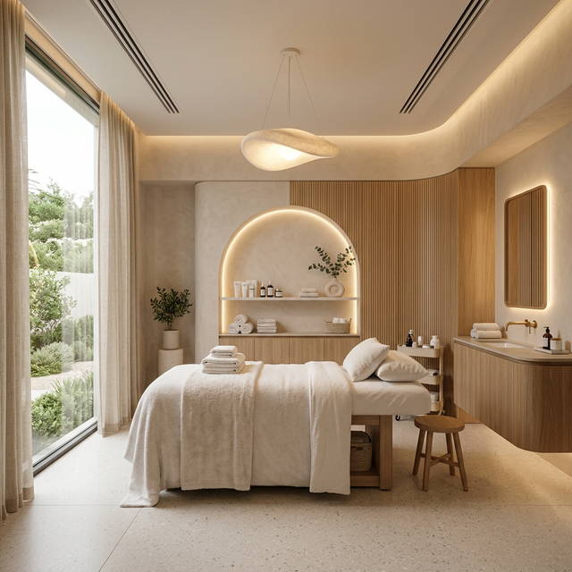

Medicina, Salud y Belleza Avanzada
Tu aliado en el cuidado integral. Procedimientos estéticos personalizados a cargo de profesionales de la salud: Dra. Karen Mayorga Quirós y Katherine Leitón Castillo.
Agendar Valoración
Nuestros Tratamientos
Descubre una nueva forma de cuidarte con tecnología avanzadaFacial & Regeneración
Mejora la textura y regenera tu piel. Ofrecemos Dermaplaning, Dermapen, Peelings, aplicación de Exosomas y Polinucleótidos, además de inyectables como Botox y Ácido Hialurónico.
*También realizamos limpiezas faciales profundas acordes a su necesidad.
Consultar Tratamiento →Bioestimulación & Contorno
Recupera la firmeza y define tu contorno. Aplicamos Bioestimuladores de colágeno en rostro, cuello, escote, manos y glúteos. Además usamos Mesoterapia (Enzimas) para la eliminación de doble mentón y flacidez facial.
Consultar Tratamiento →Cuidado Corporal
Terapias enfocadas en tu bienestar físico. Realizamos Mesoterapia enzimática para reducción de medidas y flacidez, tratamientos para mejoría en la apariencia de estrías, y eliminación de verrugas.
Consultar Tratamiento →¿Por qué debo hacerme una Limpieza Facial?
Una limpieza facial al mes es esencial para mantener un buen cuidado de la piel. Con el tiempo, esta puede acumular politución, poros dilatados, puntos negros y células muertas que causan falta de vitalidad. ¡Además, nos ayuda a prevenir líneas de expresión!
- ✓ Limpieza profunda
- ✓ Hidratación intensiva
- ✓ Antienvejecimiento y luminosidad
Cuidados Post Limpieza Facial Profunda
Las Primeras 24 a 48 Horas
- No aplicar maquillaje.
- Adiós al gimnasio y al calor excesivo.
- Realizar limpieza suave en casa.
- Manos quietas (no tocarse la piel).
Hidratación y Protección
- Protección Solar (Vital) siempre.
- Beber mucha agua para hidratar.
- Mantener en calma la zona tratada.
- Aplicar hidratación intensiva.
Plan de Acción
Para que el brillo dure más de una semana:
- Cambiar funda de almohada hoy (para evitar bacterias).
- Retomar ácidos/retinol después de 3 a 5 días (según sensibilidad).
Nota: Es normal que aparezca un ligero enrojecimiento en las primeras horas.
Preguntas Frecuentes
Recomendamos realizar una limpieza facial profunda aproximadamente una vez al mes para mantener los poros limpios y el ciclo de renovación natural de la piel. Sin embargo, esto puede variar según las necesidades específicas de tu cutis.
No, el botox no deforma la cara. Es un tratamiento que ayuda a reducir la apariencia de las líneas de expresión, como las cejas fruncidas y las líneas entre los ojos, al bloquear los neurotransmisores que causan la contracción muscular que produce estas líneas.
No, el peeling no quema la cara. Es un tratamiento que ayuda a eliminar las células muertas de la piel, lo que puede causar un ligero enrojecimiento en las primeras horas, pero generalmente no causa dolor.
Agenda tu cita hoy
Ubicados en: Clínica ODONTOBATAAN
Teléfono / WhatsApp: 8432 0647